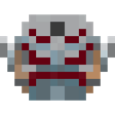

Versions#
| Mod version | 8.0 (these pages) |
|---|---|
| Minecraft | 1.20.1 |
| Loader | Forge 47.x (built on 47.4.20). There's no Fabric build. |
| Mod ID | infinity |
Required mods#
| Mod | Version | Used for |
|---|---|---|
 Palladium Palladium | 1.20.1-4.2.0 or newer (built on 4.5.6) | The whole power system: stones, abilities, skill trees, render layers and addon packs. Its own items (the vibranium ingot, vibranium circuit and flux capacitors) also unlock some gauntlet skins. |
 GeckoLib GeckoLib | 4.x for 1.20.1 (built on 4.8.4) | Animated and custom models: the Orb, the Eye of Agamotto, gauntlet skins, stones in their sockets and Malekith. |
 Chrono API Chrono API | 1.0.0 or newer | Changing the tick rate and pausing time: Slow Time, Freeze Time and the Time Stone's immunity to them. |
 Pehkui Pehkui | 3.7.12 | Reality Stone Size Changing and Invisibility scaling, and the Mind Stone's Intangibility hitbox and reach. |
Installing#
- Install Minecraft 1.20.1 with Forge 47.x.
- Put Infinity Stone Core, Palladium, GeckoLib, Chrono API and Pehkui in your
modsfolder. - Add any of the optional mods below that you want.
On a server, the server and every player need the same mods.
Optional mods and integrations#
None of these are needed. Each one adds something when it's installed.
| Mod | What you get |
|---|---|
 Immersive Portals (with Immersive Portals (with  Cloth Config) Cloth Config) | Space Stone portals opened from the Teleport GUI menu become real portals: you see the other side through them and walk straight through, both ways, even between dimensions. Without it they work as before. See Space Stone. |
 Ad Astra Ad Astra | The Garden, Vormir, Morag and Svartalfheim as planets. You need a Tier 4 rocket to get to them. |
 Cosmic Horizons Cosmic Horizons | A Marvel solar system (dimension infinity:marvel) with the same four planets to fly to. |
 Curios API Recommended Curios API Recommended | Hands slot for the Infinity Gauntlet (its visibility button works too), head slot for the six stones, necklace slot for the Eye of Agamotto. |
 JEI JEI | Recipes, plus info pages on the stones, containers, cast, shards, uru and dwarf star meteor saying where to find them. |
 Tinkers' Construct Tinkers' Construct | Titanium, gold titanium alloy and ferro titanium gold alloy as materials, four molten fluids (uru, titanium, gold titanium alloy, ferro titanium gold alloy) and casting for the gauntlet and the ferro titanium gold ingot. |
 Fsang's Heropack Fsang's Heropack | Steel and gold titanium share item tags with Fsang's, and Fsang's uru ingots can be used for uru plates. |
 Pugmeowla's Infintrix (with Pugmeowla's Infintrix (with  Alien Evolution, Alien Evolution,  Into the Omniverse or Into the Omniverse or  Omnitrix Evolution) Omnitrix Evolution) | Omnitrixes work as custom gauntlets. |
 Infinity Protocol Infinity Protocol | The Iron Man MK85 suit works as a gauntlet, with the stones only showing during its nano gauntlet animation. |
 Pugmeowla's Herbs of Wakanda Pugmeowla's Herbs of Wakanda | The Black Panther necklace gives the Infinity Gauntlet power (chest or Curios necklace). |
| Pugmeowla's Infinity Generator | Its generator shows up in the Infinity Stone Core creative tab. |
 Ultor Infinitus (Infinity Ultron) | A player with the InfinityUltron tag can fire the Mind Stone beam from their head. |
 Powerborne Powerborne | A thrown Stormbreaker near someone wearing the gauntlet switches off the Soul Stone's defenses and hurts them. |
 Trinkets Trinkets | Glove slot data for a Fabric build. Not used on Forge |